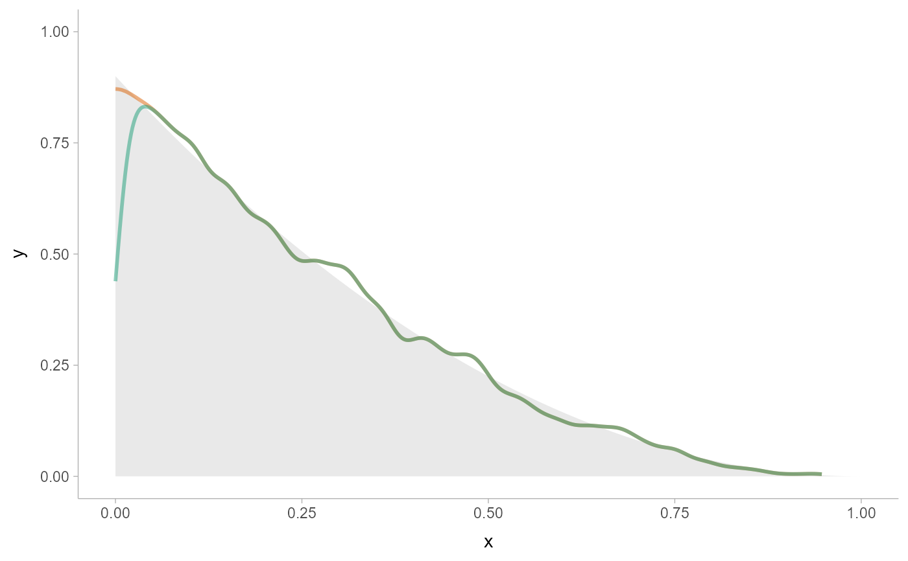

Unbounded density estimator using stats::density().
Supports automatic partial function application.
Usage
density_unbounded(
x,
weights = NULL,
n = 512,
bandwidth = "dpi",
adjust = 1,
kernel = "gaussian",
trim = FALSE,
adapt = 1,
na.rm = FALSE,
...,
range_only = FALSE
)Arguments
- x
numeric vector containing a sample to compute a density estimate for.
- weights
optional numeric vector of weights to apply to
x.- n
numeric: the number of grid points to evaluate the density estimator at.
- bandwidth
bandwidth of the density estimator. One of:
a numeric: the bandwidth, as the standard deviation of the kernel
a function: a function taking
x(the sample) and returning the bandwidtha string: the suffix of the name of a function starting with
"bandwidth_"that will be used to determine the bandwidth. See bandwidth for a list.
- adjust
numeric: the bandwidth for the density estimator is multiplied by this value. See
stats::density().- kernel
string: the smoothing kernel to be used. This must partially match one of
"gaussian","rectangular","triangular","epanechnikov","biweight","cosine", or"optcosine". Seestats::density().- trim
Should the density estimate be trimmed to the bounds of the data?
- adapt
(very experimental) The name and interpretation of this argument are subject to change without notice. Positive integer. If
adapt > 1, uses an adaptive approach to calculate the density. First, uses the adaptive bandwidth algorithm of Abramson (1982) to determine local (pointwise) bandwidths, then groups these bandwidths intoadaptgroups, then calculates and sums the densities from each group. You can set this to a very large number (e.g.Inf) for a fully adaptive approach, but this will be very slow; typically something around 100 yields nearly identical results.- na.rm
Should missing (
NA) values inxbe removed?- ...
Additional arguments (ignored).
- range_only
If
TRUE, the range of the output of this density estimator is computed and is returned in the$xelement of the result, andc(NA, NA)is returned in$y. This gives a faster way to determine the range of the output thandensity_XXX(n = 2).
Value
An object of class "density", mimicking the output format of
stats::density(), with the following components:
x: The grid of points at which the density was estimated.y: The estimated density values.bw: The bandwidth.n: The sample size of thexinput argument.call: The call used to produce the result, as a quoted expression.data.name: The deparsed name of thexinput argument.has.na: AlwaysFALSE(for compatibility).cdf: Values of the (possibly weighted) empirical cumulative distribution function atx. Seeweighted_ecdf().
This allows existing methods for density objects, like print() and plot(), to work if desired.
This output format (and in particular, the x and y components) is also
the format expected by the density argument of the stat_slabinterval()
and the smooth_ family of functions.
See also
Other density estimators:
density_bounded(),
density_histogram()
Examples
library(distributional)
library(dplyr)
library(ggplot2)
# For compatibility with existing code, the return type of density_unbounded()
# is the same as stats::density(), ...
set.seed(123)
x = rbeta(5000, 1, 3)
d = density_unbounded(x)
d
#>
#> Call:
#> density_unbounded(x = x)
#>
#> Data: x (5000 obs.); Bandwidth 'bw' = 0.01647
#>
#> x y
#> Min. :-0.04939 Min. :0.000098
#> 1st Qu.: 0.21210 1st Qu.:0.181676
#> Median : 0.47358 Median :0.674336
#> Mean : 0.47358 Mean :0.955131
#> 3rd Qu.: 0.73506 3rd Qu.:1.616192
#> Max. : 0.99655 Max. :2.774063
# ... thus, while designed for use with the `density` argument of
# stat_slabinterval(), output from density_unbounded() can also be used with
# base::plot():
plot(d)
# here we'll use the same data as above, but pick either density_bounded()
# or density_unbounded() (which is equivalent to stats::density()). Notice
# how the bounded density (green) is biased near the boundary of the support,
# while the unbounded density is not.
data.frame(x) %>%
ggplot() +
stat_slab(
aes(xdist = dist), data = data.frame(dist = dist_beta(1, 3)),
alpha = 0.25
) +
stat_slab(aes(x), density = "bounded", fill = NA, color = "#d95f02", alpha = 0.5) +
stat_slab(aes(x), density = "unbounded", fill = NA, color = "#1b9e77", alpha = 0.5) +
scale_thickness_shared() +
theme_ggdist()
